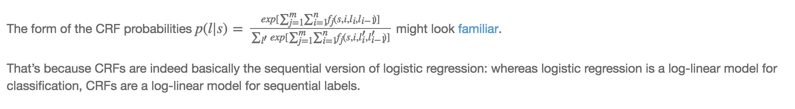
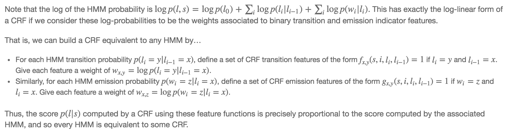

1. 概率无向图
不同于HMM中状态序列是有方向的，在CRF中，我们使用的是概率无向图模型。
状态与状态之间并没有谁推导出谁的先后关系(\(P(y_n|y_{n-1}, y_{n-2}...y_1)\))，这里我们用的是序列整体的分布\(P(y_1,y_2,...y_n)\)。
因子分解
团： 对于无向图中的一个子集，如果该子集中任意两个点都是有边相连接的，那么这样的子集就叫做该无向图上的一个团
最大团： 对于一个团，如果无法添加另外一个点使得团增大，那么现有的团就是最大团
一个概率无向图总的的联合概率分布\(P(Y)\)可以分解为在其所有最大团上定义的一个势函数的积：
其中C是最大团的集合，对于其中每一个最大团，有一个势能函数\(\Phi_C\)，\(Y_C\)为属于这个最大团的节点，\(Z=\sum_Y{\prod_C{\Phi_C(Y_C)}}\)是一个规范化因子，目的是为了让\(P(Y)\)构成一个概率分布。
由于势函数是严格正的，所以一般就定义为指数函数\(exp(-E(Y_C))\)
总结： 概率无向图模型的联合概率分布可以分解为其所有最大团上的势函数的积。
2. 条件随机场
定义
CRF里的条件指的是在给定随机变量X的条件下，随机变量Y的马尔科夫随机场。
通常情况，只使用线性链条件随机场，将其用于标注问题，条件概率为P(Y|X)。其中X是给定的观测序列，Y是需要标注的标注序列(状态序列)。
一般形式
对于任意节点v成立，则称条件概率分布P(Y|X)为条件随机场。
同HMM的条件概率相比较，可以更好的理解CRF的条件概率定义。首先，在HMM中，观测序列中每个位置的观测值只和它所处的状态有关，而在CRF中，所有的观测序列是作为一个整体X来处理的。其次，对于\(w\neq v\)是说除了v以外的所有点，\(w～v\)是说和v相邻的点，也就是状态序列某一位置的状态y只和与它有连接的状态值有关。
线性链形式
线性链形式顾名思义就是状态序列\(Y=(Y_1, Y_2, ..., Y_n)\)是线性的，也就是说某一位置的状态只和它前后两个状态相连。
参数化形式
根据之前对无向图模型的分解，对于线性链条件随机场，很容易验证每两个相邻的状态节点\(y_{i-1},y_i\)构成一个最大团。 于是线性链条件随机场的参数化形式可以分解为每个团上的特征函数和X对每个位置i上的特征函数：
其中\(t_k\)是定义在边上的特征函数，成为转移特征，依赖于当前和前一个位置(构成一个最大团)，\(\lambda_k\)是特征\(t_k\)的权重。\(s_l\)是定义在节点上的特征函数，称为状态特征，依赖于当前位置，\(\mu_l\)为特征\(s_l\)的权重。
\(t_k\)和\(s_l\)都依赖于位置，是局部特征函数，通常，它们的取值为1或0，当满足特征条件时值为1，反之为0.
条件随机场完全由特征函数\(t_k\)和\(s_l\)及其对应的权重\(\lambda_k\)和\(\mu_l\)确定。
简化形式
由参数化形式可是对于每个特征函数，它都会计算在所有位置上的值，于是可以对每个局部特征，在所有位置上求和得到一个全局特征函数。
汇总K1个转移特征和K2个状态特征：
- \(k = 1, 2, ..., K_1\)时，\(f_k (y_{i-1}, y_i, x, i) = t_k (y_{i-1}, y_i, x, i)\)
- \(k = K_1 +l, l = 1, 2, ... , K_2\)时， \(f_k (y_{i - 1}, y_i, x, i) = s_l (y_i, x, i)\)
对每个特征函数在所有位置求和：
用\(w_k = (\lambda_1, \lambda_2, .., \lambda_{K_1}, \mu_{K_1 + 1}, .., \mu_{K_1 + K_2})\)表示每个特征的权重。
于是条件随机场可以表示为：
如果将权重和特征函数看成向量形式，\(w = (w_1, w_2, ..., w_K)^T\)和\(F(y, x) = (f_1(y,x), f_2(y,x),...,f_K(y,x)\)，则可以将上式化简为：
矩阵形式
上面的简化形式是对于每个特征函数在所有位置上求和，同样的我们也可以考虑在每个位置上对所有特征函数的值求和。
假设每个位置上的y有m个取值，则\(M_i(y_{i-1}, y_i)\)就是一个m*m阶的矩阵.
对应上面的表达式可以发现(规定\(y_0=start, y_{n+1} = stop\))
对于一个给定的序列，依此选取在每个矩阵中对应的元素就得到该路径的非规范概率。规范化因子则是这些矩阵的矩阵和，也对应着所有路径的非规范概率之和。
总结：
建立一个CRF，只需要定义一系列的特征函数，这些特征函数的值依赖于整个句子(x)，当前位置(i)和相邻的标签(\(y_{i-1}\), \(y_{i}\))，给出这些特征函数对应的权重，学习到这些权重值就得到了CRF的模型。
与逻辑回归和HMM的关系
逻辑回归

可以看出CRF和逻辑回归的概率表达式非常相似，因为它们都是属于log-linear模型，不同的是逻辑回归是属于分类也就是说y是一个值，而CRF的y是一个序列，CRF是一个序列版的逻辑回归。
那么如何将复杂的CRF转换为逻辑回归呢？
考虑每个位置的特征函数\(f_i(x, i, y_{i-1}, y_{i})\)为\(x_i\)，然后其权重为\(w_i\)，这样就简化成了逻辑回归。
HMM

CRF是根据定义的特征函数去求\(P(y|x)\)的得分，而HMM是用生成的方法先根据数据求\(P(y, x) = p(y_0)\prod_i p(y_i|y_{i-1})p(x_i | y_i)\)。求对数可得：
这同样也是一个log-linear模型，将CRF中特征函数的权重等价于这些对数值就可以得到一个HMM模型：
- 对于HMM的转移概率\(p(y_i=b|y_{i-1}=a)\)， 定义CRF的转移特征为\(f(x, i, y_i, y_{i-1})=1\)，如果\(y_{i-1} = a, y_i = b\)，其权重为\(logp(y_i=b|y_{i-1}=a)\)
- 对于HMM的发射概率\(p(x_i=b|y_i=a)\)，定义CRF的发射特征为\(f(x, i, y_i, y_{i-1}) = 1\)如果\(x_i=b, y_i=a\)，其权重为\(logp(x_i=b|y_i=a)\)
这样就将CRF模型转换成了一个HMM模型。除此之外，CRF比HMM的更加强大：
- HMM的\(x_i\)只与当前的状态\(y_i\)有关，而CRF的整个序列y是和整个输入x相连的
- HMM的发射概率\(p(x_i|y_i)\)是一个0到1的数，一个状态对所有发射值的概率和为1，因为是个概率值，而CRF中特征函数的权重则可以是任意值。这其实是因为HMM的归一化发生在每一个位置，而CRF的归一化发生在整体序列上，对于中间的过程并不要求严格符合概率分布的形式。
3. CRF的概率计算
概率的计算是说在给定CRF模型P(Y|X), 输入序列x和输出序列y的情况下，计算条件概率\(P(Y_i = y_i|x)\)和\(P(Y_{i-1} = y_{i-1}, Y_i = y_i, x)\)以及相应的数学期望的问题。
前向后向算法
类似在HMM模型的情况，这里同样定义一套前向后向算法。
定义前向概率\(\alpha_i(y_i | x)\)表示在位置i的标记是\(y_i\)并且到位置i的前部分标记序列的非规范化概率，定义后向概率\(\beta_i(y_i|x)\)表示在位置i的标记是\(y_i\)并且从位置i+1到n的后部分标记序列的非规范化概率。
理解起来的话就是说，前向概率\(\alpha_i(y_i|x)\)表示的是\(\sum_{y_0, y_1, ..., y_{i-1}} P(y_0, y_1, .., y_{i-1}, y_i | x)\)对于除\(y_i\)以外的部分序列的所有情况的和。而后向概率\(\beta_i(y_i|x)\)表示的是\(\sum_{y_{n+1}, y_n, ..., y_{i+1}}P(y_{n+1}, y_n, ..., y_{i+1}, y_i|x)\)除\(y_i\)以外的部分序列的所有情况的和。
对于后向概率\(\beta_i\)，这里与HMM的情形有点不同，在HMM中，\(\beta_i = P(o_{i+1}, o_{i+2},...|s_i)\)也就是说i时刻的状态是作为先验概率出现的，因为HMM的模型是概率有向图，状态是单向传递的\(P(y_{i+1}|y_i)\)。而CRF中是无向图，两者根据之前矩阵形式的推导，有类似联合概率的形式，才有了以下\(\beta_i\)的递推公式，其中的\(M_{i+1}(y_i, y_{i+1}|x)\)既可以用于正向，也可以用于反向的推导。
对于\(\alpha_0(y_0|x)\)，定义
- \(y_0 = start\)时，\(\alpha = 1\)
- else, \(\alpha = 0\)
其他位置\(\alpha_i(y_i | x)\)，有
简化为
由于每个位置的y有m个取值，所以这里得到的是个m维列向量。
对于\(\beta_{n+1}(y_{n+1}|x)\),定义
- \(y_{n+1} = stop\)时，\(\beta = 1\)
- else, \(\beta = 0\)
其他位置\(\beta_i(y_i|x)\),有
简写为：
规范化因子可以得出就是从start到stop的路径的非规范化概率和，相当于：
稍微说一下个人理解，前向概率最终走到末尾节点\(\alpha_n(x)\)的每一个分量m，对应了一个值\(\alpha_n(y_n = m|x)\)，对各分量求和，得到整个序列的概率和。后向概率最终走到开始节点\(\beta_1(x)\)的每一个分量m，对应了一个值\(y_1 = m\)时，从\(y_2\)到stop的这些路径的概率和，对各分量求和，同样得到整个序列的概率和。
概率计算
主要是两个概率\(P(Y_i = y_i|x)\)和\(P(Y_{i-1}=y_{i-1}, Y_i = y_i|x)\)
期望计算
有了概率的定义，很自然就可以给出特征函数对应的期望。
特征函数\(f_k\)关于条件分布\(P(Y|X)\)的数学期望是：
假设经验分布为\(\tilde{P}(X)\),特征函数关于联合分布\(P(Y,X)\)的期望为：
后面部分就是条件概率期望的部分。
注意到线性链CRF的特征函数是定义在\(y_{i-1}y_i\)的边上的，因此概率也拆开为对应边存在的概率
4. CRF的预测算法
CRF的预测算法就是在给定CRF模型P(Y|X)和观测序列x的情况下给出概率最大的输出序列，通常情况也就是对于观测序列进行标注。
用公式表示就是：
因为只是求概率最大的路径而不是求真实的概率值，所以这里只要求非规范化概率即可，提高了效率。
将其分解到每个位置就将问题转换为
其中\(w=(w_1, w_2, ..., w_k)\)，对应k个特征函数的权重，\(F_i(y_{i-1}, y_i, x) = (f_1(y_{i-1}, y_i, x), f_2(y_{i-1}, y_i, x),...,f_k(y_{i-1}, y_i, x))\)对应每个特征函数在位置i上的值，两向量的乘积就表示从\(y_{i-1}\)到\(y_i\)上的“概率”。
注意上面对于整个路径的概率并没有求乘积，而是求和，这是因为\(w\cdot F\)是从\(exp(w\cdot F)\)中提取出来的，求和就等价于整体求乘积。
预测算法
对于一条路径，求出所有位置所有状态的组合，最后选择概率最大的，这种方法肯定是不现实的，效率非常低（\(O(n^T)\)）。
对于这种求最优序列的问题，在每个位置有n个状态，总体概率可以拆解为相邻位置的状态转移概率，求整体最优的序列都可以使用维特比算法，也就是一种动态规划求最优解的方法。
简单描述：
- 初始位置t=0，计算每个状态\(y_0\)的概率，就得到n个概率值（假设有n个可能的状态）
- 在位置t=1，针对每个状态\(y_1\)，求出使得\(y_0, y_1\)序列概率最大的\(y_0\),这样又得到n个概率（每个\(y_1\)对应一个\(y_0\)），记录下此时的n个\(y_0\)
- 依次递推，每个时刻记录n个概率值，当到达最终点的时候，选出概率最大的状态进行回溯就得到最优路径
- 通过上面的方法，每个位置都只要计算\(n^2\)次，时间复杂度为\(O(kn^2)\)与之前\(O(n^k)\)相比大为减少。
5. CRF的学习算法
CRF模型的学习就是学习每个特征函数的权重，通常情况下采用最大似然估计的方法进行学习。对于单样本的情况，给定x，y给出CRF的模型的条件概率：
先进行log简化一下为：
采用梯度下降法，对第j个特征函数的权重\(w_j\)求导：
有了梯度函数按照梯度负方向重复进行更新：
就可以得到最后收敛的参数了。
参考资料
[1] 统计学习方法 - 李航
[2] Introduction to Conditional Random Fields - Edwin Chen